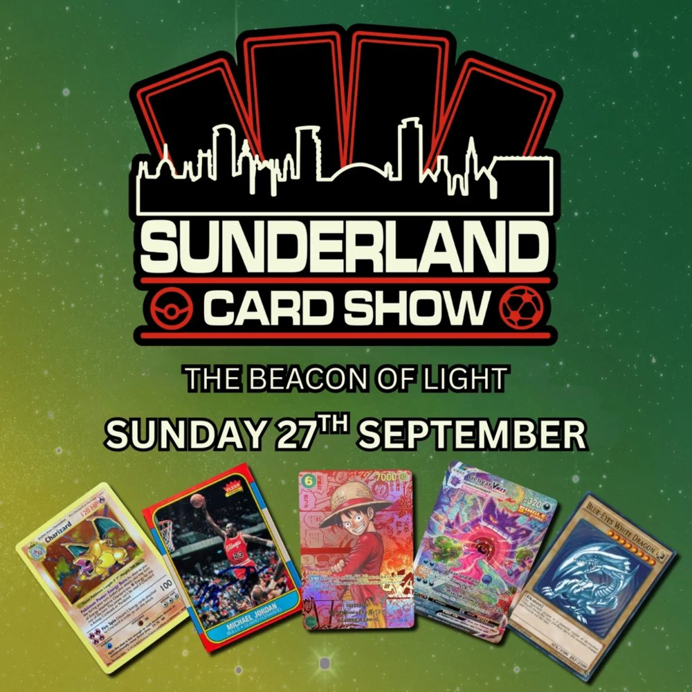

The shows are selling and the vendor tables are gone. But every ticket is being bought with Meta spend, one city at a time, and the biggest free audience in the hobby is not being used at all. This page is about fixing that, starting at the Beacon of Light on the 27th.

Fusion Creative is a content and marketing agency in Newcastle. We film short-form video in person, run the socials and the paid side, and we have taken independent businesses from nothing to tens of millions of views on the same formats the card hobby runs on. The Sunderland show is twenty minutes from us, so we had a proper look at how Northern Card Shows fills a room.
The short version: you are paying Meta for an audience the hobby would give you for free. Trading cards are one of the most watched categories on TikTok and YouTube, pack rips, grading reveals, show hauls, and a card show is that content happening live for six hours with two thousand people in it. Right now none of it leaves the building. Below is what we found, the ideas we would film, what we have done on the paid side for another North East brand, and how the two together let you cut the spend per show instead of growing it.
We pulled Northern Card Shows in the Meta Ad Library. Since late December there has been a campaign for every city, usually several versions, running for weeks, then a "last tickets" push with a discount code to close. Seven are live today. It clearly works, the rooms fill. The problem is what it costs and what it leaves behind: nothing. Every show starts from zero again, and every ticket sold at MANCHESTER10 or EDINBURGH10 is margin handed back to close a sale that a following would have made for you.
Meta Ad Library, exact phrase "Northern Card Shows", checked 13 September 2026. Copy and dates as shown in the library.
Fifteen Instagram posts have pulled 2,649 followers, which is about 176 followers a post. That ratio is a signal: people want to follow this and there is almost nothing to follow. Facebook is where the ads land and where the older collectors are. TikTok, the platform where the hobby actually lives, has no Northern Card Shows on it at all.
Posters and dates. No faces, no cards being pulled, no vendors, no crowd. The hobby's best content is being made at your shows by other people's phones.
The page the ads run from. Fine for the audience that already knows you, no use for finding the next 2,000 in a city you have never played.
Pack openings, grading reveals and "what did you pull" are some of the most watched formats on both platforms. A show is six hours of it, sixteen times a season.
A restaurant has to invent content. A card show does not. The queue at the door, the first pull of the day, the trade that took twenty minutes, the grail somebody finally found, the vendor with the £4,000 card in the case. It all happens anyway, in front of two thousand people who would love to be in the video. Film Sunderland and you have the build-up for Liverpool, Brighton and Southampton without spending a pound more on ads.
A two-person crew on the floor for the day. Twenty clips minimum, all vertical, all with a hook in the first second.
The best pulls, the best trades, the best faces, out across TikTok, Reels and Shorts while the show is still being talked about.
Each clip ends on the next date. "This was Sunderland. Liverpool is Saturday." The audience carries over, the following compounds.
Meta drops to retargeting and a last-week push. The discount codes stop being necessary. The season pays for its own reach.
None of these need a set, a script or a budget. They need a camera on the floor and permission to point it at people who are already having the best day of their month.
Walk the floor asking every vendor for their priciest card. Build to the reveal. Ends on a single number and the next show date.
One presenter, fifty pounds, six hours. What is the best collection you can walk out with? Bargaining on camera, vendors playing along.
A kid, a parent, a first-timer. Pack rip at the table, real reaction, no commentary needed. If it hits, it hits.
The moment someone finds the card they have chased for years. The hands shaking, the price check, the handshake. Filmed with a yes from them.
A valuation corner with your grading partner. People bring a card from home, get an honest answer on camera. Ten a show, thirty seconds each.
Two collectors, one table, a negotiation. Cut to the handshake and what each walked away with.
"Show us your best three." Every vendor gets one, every vendor shares it, and every vendor's following becomes yours for a day.
The queue at 9:45, the doors at 10, the first ten seconds of the floor filling. Time-lapse and a countdown to the next city.
Organic is the engine, but we run paid every day and we would run yours. The difference is what goes into the ad. Right now the creative is a poster and a date. We film creative specifically to convert: a real room, a real pull, a face, a hook in the first second, the date and a ticket button, cut to fifteen seconds and tested three or four angles at a time. Then it is aimed at people who have already watched the organic clips, so the click costs a fraction of a cold one.
That is The Northumberland Candle Company, figures from their Shopify and Meta accounts, and it is the same account we still run. A few of the things we learned doing it that apply straight to a touring show:
On Meta the algorithm finds the people who watch. A poster gets skipped by everyone; a kid pulling a Charizard at your show gets watched by collectors, and Meta learns who they are. Better creative is cheaper reach.
An ad set needs roughly fifty conversions to leave the learning phase. Short bursts and constant restarts pay the expensive part every time. Fewer ads, run longer, winners scaled.
Everyone who watches thirty seconds of Sunderland footage is an audience for Liverpool. Retargeting them costs a fraction of finding strangers, and it is where most ticket sales should come from.
A discount to a cold audience is margin thrown at people who were never coming. Shown to warm watchers in the last two days it closes the room without training every buyer to wait for it.
Ad and revenue figures verified from the client's Shopify and Meta accounts on 31 August 2026. What we did for one client, not a promise of what your shows will do.
One account, one look, content from every show. The formats above on a schedule, cut so each city's clips promote the next city's date.
Start with the North East and the M62: Sunderland, Halifax, Leeds, Manchester, Doncaster, Liverpool. Twenty clips a show, posted within 48 hours.
Vendor spotlights they will share, a "show us your pickups" tag with reposts, a ticket giveaway per city for tagging a mate. The audience does the posting.
We film ad creative on purpose, not just repost the organic clips: hook, room, date, ticket button, tested weekly. Retargeting the people who watched, plus a last-week push per city. Less spend, and the spend that stays works harder.
The pilot is on your doorstep. Let us film the Beacon of Light on the 27th. You get the clips within 48 hours, we point them at Liverpool on 3 October, and you see what organic does to that city's ticket sales before you commit to anything beyond it.
Over 87 million views across Instagram and TikTok from a standing start, and weekly takings up from £8,000 to £10,000 a week to over £14,000. All shot on the floor of a small business, the same way we would shoot a show floor.
158 videos, 8 million views, and a TikTok built from nothing to 2,200 followers in under four months. The relevant part for you: the account did not exist when we started either.
One conversation before the 27th. We bring the crew, you keep running the show, and Liverpool gets sold on real footage instead of a poster and a promo code.